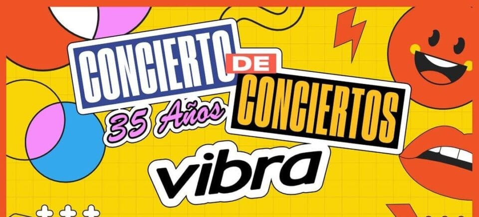

Fue un día que quedará grabado en la memoria de todos los presentes, un concierto de rock que superó todas las expectativas y dejó una huella imborrable en el corazón de los aficionados. Los artistas entregaron lo mejor de sí mismos, desafiando los límites de la música y llevando la pasión a un nivel sin igual. Fue un día espléndido, en el que la música y la emoción se fusionaron para crear una experiencia inolvidable. En esta introducción, nos sumergiremos en ese concierto de rock que se convirtió en un suceso épico, donde los artistas brillaron con luz propia y el público vivió un día extraordinario.
